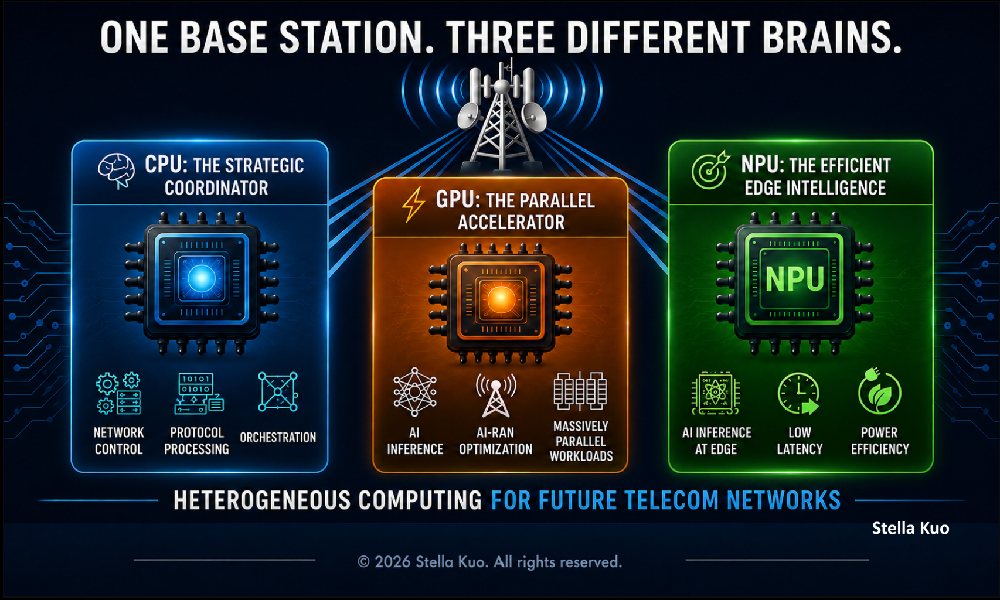

𝐎𝐧𝐞 𝐛𝐚𝐬𝐞 𝐬𝐭𝐚𝐭𝐢𝐨𝐧.
𝐓𝐡𝐫𝐞𝐞 𝐝𝐢𝐟𝐟𝐞𝐫𝐞𝐧𝐭 𝐛𝐫𝐚𝐢𝐧𝐬.
For decades, CPUs and specialized accelerators powered the intelligence of the base station.
AI is accelerating that shift.
𝐌𝐨𝐝𝐞𝐫𝐧 𝐭𝐞𝐥𝐞𝐜𝐨𝐦 𝐧𝐞𝐭𝐰𝐨𝐫𝐤𝐬 𝐚𝐫𝐞 𝐞𝐯𝐨𝐥𝐯𝐢𝐧𝐠 𝐛𝐞𝐲𝐨𝐧𝐝 𝐚 𝐬𝐢𝐧𝐠𝐥𝐞 𝐭𝐲𝐩𝐞 𝐨𝐟 𝐰𝐨𝐫𝐤𝐥𝐨𝐚𝐝.
They need different compute engines working together:
- CPU — Network control, orchestration, and general-purpose processing.
- GPU — High-performance AI and massively parallel computing.
- NPU — Efficient AI inference at the edge.
The future is not about replacing CPUs with GPUs.
Or GPUs with NPUs.
𝐓𝐡𝐞 𝐟𝐮𝐭𝐮𝐫𝐞 𝐢𝐬 𝐡𝐞𝐭𝐞𝐫𝐨𝐠𝐞𝐧𝐞𝐨𝐮𝐬 𝐜𝐨𝐦𝐩𝐮𝐭𝐢𝐧𝐠.
The smartest base station won't have the most powerful compute engine.
It will have the right compute engine for every workload.
𝐓𝐡𝐫𝐞𝐞 𝐬𝐩𝐞𝐜𝐢𝐚𝐥𝐢𝐳𝐞𝐝 𝐛𝐫𝐚𝐢𝐧𝐬.
𝐎𝐧𝐞 𝐢𝐧𝐭𝐞𝐥𝐥𝐢𝐠𝐞𝐧𝐭 𝐧𝐞𝐭𝐰𝐨𝐫𝐤.
Do you think heterogeneous computing will become the standard architecture for AI-native networks?
